[ROWS] 421
[FIELDS] 31
[MODIFIED] 2024-08-09
[PERIODICITY] Monthly [R/P1M]
[TEMPORAL] 2021-12-01 • 2023-06-30
[DICTIONARY] https://data.cms.gov/resources/esrd-facility-aggregation-group-performance-data-dictionary
[SITE] https://data.cms.gov/cms-innovation-center-programs/disease-episode-based-payment-models/end-stage-renal-disease-facility-aggregation-group-performance
[REFERENCES] https://data.cms.gov/resources/esrd-treatment-choices-etc-model-methodology
[RESOURCES] https://data.cms.gov/data-api/v1/dataset-resources/4bae4223-a1dc-4b9c-bd7e-d9622461be35
[DOWNLOAD] https://data.cms.gov/sites/default/files/2024-07/245da9ee-780e-41d3-8262-55a3c93c7f4a/ETC-MY4-DF-ModelDetailedResults.csv
17 ESRD Group ETC Performance
The End-Stage Renal Disease (ESRD) Facility Aggregation Group Performance dataset provides performance information in the ESRD Treatment Choices (ETC) Model.
The dataset includes information on Performance Payment Adjustment (PPA), Modality Performance Score (MPS), home dialysis rate, and transplant rate, as well as the individual components of each rate for each model participant ESRD facility aggregation group.
All ESRD facilities within the same aggregation group share the same performance information. The supplementary aggregation group crosswalk file may be used to map aggregation groups to individual ETC Participant ESRD facilities.
Metadata
Resources
[ CSV] 54.5K 2023 ESRD Facility Aggregation Group Performance Jun
<https://data.cms.gov/sites/default/files/2024-07/245da9ee-780e-41d3-8262-55a3c93c7f4a/ETC-MY4-DF-ModelDetailedResults.csv>
[ PDF] 852K 2023 ESRD Facility Aggregation Group Performance Data Dictionary
<https://data.cms.gov/sites/default/files/2023-09/ae0bb03a-9ecd-4459-9de1-5b424617265d/ETC-MY1-DF-DataDictionary-508.pdf>
[ PDF] 117.3K 2023 ETC Model Methodology
<https://data.cms.gov/sites/default/files/2023-09/ETC-Methodology-508.pdf>
[XLSX] 436.3K 2023 ETC-MY2-AG-Crosswalk
<https://data.cms.gov/sites/default/files/2023-10/ETC-MY2-AG-Crosswalk-508.xlsx>
[XLSX] 421.7K 2023 ETC-MY1-AG-Crosswalk
<https://data.cms.gov/sites/default/files/2023-09/ETC-MY1-AG-Crosswalk-508.xlsx>
[XLSX] 411.7K 2023 ETC-MY3-AG-Crosswalk
<https://data.cms.gov/sites/default/files/2024-02/957f32a7-bc9e-456a-ac3a-2f22d744c151/ETC-MY3-AG-Crosswalk-508.xlsx>
[XLSX] 405.7K 2023 ETC-MY4-AG-Crosswalk
<https://data.cms.gov/sites/default/files/2024-07/ETC-MY4-AG-Crosswalk-508.xlsx>
Dictionary
AGG_ID
The Aggregation Group ID. The aggregation group
for a subsidiary ESRD facility includes all ESRD
facilities owned in whole or in part by the same
legal entity located in the same Hospital Referral
Region in which the ESRD facility is located.
An ESRD facility that is not a Subsidiary ESRD
facility is not included in an aggregation group
but will have its own aggregation group ID.
HRR_NUM_MY
The Hospital Referral Region number during the
Measurement Year.
HDR_MY
For Measurement Year 1 and Measurement Year 2, the
Home Dialysis Rate for an aggregation group is the
percent of attributed ESRD beneficiary months in
which ESRD beneficiaries received dialysis at home
or self-dialysis in-center during the Measurement
Year. For Measurement Year 3 through Measurement
Year 10, the Home Dialysis Rate for an aggregation
group is the percent of attributed ESRD
beneficiary months in which ESRD beneficiaries
received dialysis at home, or self-dialysis
in-center, or nocturnal in-center dialysis. The
same Home Dialysis Rate is used for achievement
scoring and improvement scoring.
HDR_DNM_MY
The Home Dialysis Rate's denominator is the number
of attributed ESRD beneficiary months at the
aggregation group level during the Measurement
Year.
HDR_NUM_MY
For Measurement Year 1 and Measurement Year 2,
the Home Dialysis Rate's numerator is the number
of home dialysis treatment beneficiary months
for attributed ESRD beneficiaries during the
Measurement Year plus one half the total number
of self-dialysis in-center treatment beneficiary
months. For Measurement Year 3 through Measurement
Year 10, the Home Dialysis Rate's numerator is
the number of home dialysis treatment beneficiary
months for attributed ESRD beneficiaries during
the Measurement Year, plus one half the total
number of self-dialysis in-center treatment
beneficiary months, plus one half the total
number of nocturnal in-center dialysis treatment
beneficiary months.
HD_NUM_MY
Number of months during which attributed ESRD
beneficiaries received maintenance dialysis at
home.
SD_NUM_MY
Number of months during which attributed ESRD
beneficiaries received self-dialysis in-center.
NOCD_NUM_MY
Number of months during which attributed ESRD
beneficiaries received nocturnal in-center
dialysis. Only applicable from Measurement Year 3
onwards.
TR_MY_ACHSCR
The Transplant Rate for an aggregation group
of ESRD facilities is the sum of the Transplant
Waitlist Rate and Living Donor Transplant Rate.
The Transplant Rate displayed here is used
for achievement scoring. For transplant, the
achievement scoring rate differs slightly from
the improvement scoring rate due to differences
in reference population groups used for risk
adjusting transplant waitlist rates in the
Measurement Year.
TR_MY_IMPSCR
The Transplant Rate for an aggregation group
of ESRD facilities is the sum of the Transplant
Waitlist Rate and Living Donor Transplant Rate.
The Transplant Waitlist Rate and Living Donor
Transplant Rate do not include beneficiary
months from beneficiaries who are 75 years of
age or older at any point during the month. For
Measurement Year 3 through Measurement Year 10,
the Transplant Waitlist Rate and Living Donor
Transplant Rate also do not include beneficiary
months from beneficiaries who had a vital
solid organ cancer diagnosis and were receiving
treatment with chemotherapy or radiation for
vital solid organ cancer during the Measurement
Year. The Transplant Rate displayed here is used
for improvement scoring. For transplant, the
achievement scoring rate differs slightly from
the improvement scoring rate due to differences
in reference population groups used for risk
adjusting transplant waitlist rates in the
Measurement Year.
TWR_DNM_MY
The Transplant Waitlist Rate's denominator is the
number of attributed ESRD beneficiary months at
the aggregation group level during the Measurement
Year.
TWR_NUM_MY
The Transplant Waitlist Rate's numerator is the
number of attributed ESRD beneficiary months at
the aggregation group level during the Measurement
Year for which attributed ESRD beneficiaries were
on the kidney transplant waitlist.
LDT_DNM_MY
The Living Donor Transplant Rate's denominator
is the number of attributed ESRD beneficiary
months at the aggregation group level during
the Measurement Year. For each aggregation group
of ESRD facilities, the Living Donor Transplant
Rate's denominator is the same as its Transplant
Waitlist Rate's denominator.
LDT_NUM_MY
The Living Donor Transplant Rate's numerator is
the number of attributed beneficiary months for
living donor transplant beneficiaries at the
aggregation group level during the Measurement
Year. Beneficiary months included in the numerator
are composed of those months between the beginning
of the Measurement Year up to and including
the month of the transplant for Living Donor
Transplant beneficiaries attributed to an ESRD
facility during the month of the transplant.
BENECNT_LDT_MY
Number of Living Donor Transplant beneficiaries
during the Measurement Year.
HEI_HDR
From Measurement Year 3 onwards, CMS incentivizes
ETC Participants to decrease disparities in
the Home Dialysis Rate and the Transplant Rate
between beneficiaries who are dual-eligible or
Low-Income Subsidy recipients (DE/LIS) and those
who are not by adding a Health Equity Incentive
to the improvement scoring methodology. An ETC
Participant earns the Health Equity Incentive for
the Home Dialysis Rate improvement score if the
Home Dialysis Rate for the Measurement Year is
at least 2.5 percentage points higher than the
corresponding Benchmark Year rate for attributed
ESRD beneficiaries who are dual-eligible or
DE/LIS. If the ETC Participant earns the Health
Equity Incentive for the Home Dialysis Rate
improvement score, CMS adds 0.5 points to the
ETC Participant's Home Dialysis Rate improvement
score. Only applicable from Measurement Year 3
onwards.
HDR_DELIS_DIFF
The difference between the Benchmark Year and
Measurement Year in the Home Dialysis Rate
for attributed ESRD beneficiaries who are
dual eligible or Low Income Subsidy recipients
(DE/LIS). Only applicable from Measurement Year 3
onwards.
HDR_DELIS_MY
The Home Dialysis Rate in the Measurement
Year for attributed ESRD beneficiaries who are
dual eligible or Low Income Subsidy recipients
(DE/LIS). Only applicable from Measurement Year 3
onwards.
HDR_DNM_DELIS_MY
Health Equity Incentive Home Dialysis Rate's
denominator is the number of attributed ESRD
beneficiary months at the aggregation group level
during the Measurement Year for attributed ESRD
beneficiaries who are dual eligible or Low Income
Subsidy recipients (DE/LIS). Only applicable from
Measurement Year 3 onwards.
HDR_NUM_DELIS_MY
Health Equity Incentive Home Dialysis Rate's
numerator is the number of home dialysis treatment
beneficiary months, plus one half the total number
of self-dialysis in-center treatment beneficiary
months, plus one half the total number of
nocturnal in-center dialysis treatment beneficiary
months during the Measurement Year, for attributed
ESRD beneficiaries who are dual eligible or
Low Income Subsidy recipients (DE/LIS). Only
applicable from Measurement Year 3 onwards.
HEI_TR
From Measurement Year 3 onwards, CMS incentivizes
ETC Participants to decrease disparities in
the Home Dialysis Rate and the Transplant Rate
between beneficiaries who are dual-eligible or
Low-Income Subsidy recipients (DE/LIS) and those
who are not by adding a Health Equity Incentive
to the improvement scoring methodology. An ETC
Participant earns the Health Equity Incentive
for the Transplant Rate improvement score if
the Transplant Rate for the Measurement Year is
at least 2.5 percentage points higher than the
corresponding Benchmark Year rate for attributed
ESRD beneficiaries who are dual-eligible
or DE/LIS. If the ETC Participant earns the
Health Equity Incentive for the Transplant Rate
improvement score, CMS adds 0.5 points to the ETC
Participant's transplant rate improvement score.
Only applicable from Measurement Year 3 onwards.
TR_DELIS_DIFF
Difference between the Benchmark Year and
Measurement Year in the Transplant Rate for
attributed ESRD beneficiaries who are dual
eligible or Low Income Subsidy recipients
(DE/LIS). Only applicable from Measurement Year 3
onwards.
TR_DELIS_MY
Transplant Rate in the Measurement Year for
attributed ESRD beneficiaries who are dual
eligible or Low Income Subsidy recipients
(DE/LIS). Only applicable from Measurement Year 3
onwards.
TWR_DNM_DELIS_MY
Number of dual eligible or Low Income Subsidy
recipient (DE/LIS) beneficiary months at the
aggregation group level during the Measurement
Year included in the Health Equity Incentive
Transplant Waitlist Rate denominator. Only
applicable from Measurement Year 3 onwards.
TWR_NUM_DELIS_MY
Number of dual eligible or Low Income Subsidy
(DE/LIS) beneficiary months at the aggregation
group level during the Measurement Year for which
DE/LIS beneficiaries were on the kidney transplant
waitlist. Only applicable from Measurement Year 3
onwards.
LDT_DNM_DELIS_MY
Number of dual eligible or Low Income Subsidy
(DE/LIS) beneficiary months at the aggregation
group level during the Measurement Year. For each
aggregation group of ESRD facilities, the Living
Donor Transplant Rate's denominator is the same as
its Transplant Waitlist Rate's denominator. Only
applicable from Measurement Year 3 onwards.
LDT_NUM_DELIS_MY
Number of dual eligible or Low Income Subsidy
(DE/LIS) beneficiary months for living donor
transplant beneficiaries at the aggregation group
level during the Measurement Year. Only applicable
from Measurement Year 3 onwards.
MPS
The Modality Performance Score is a weighted sum
of the higher of the achievement score or the
improvement score for the ETC Participant's Home
Dialysis Rate and Transplant Rate. For Measurement
Year 1 and 2 the MPS = 2 × (max(Home Dialysis Rate
Achievement, Improvement Score)) + (max(Transplant
Rate Schievement, Improvement Score)). For
Measurement Year 3 through Measurement Year
10, the MPS=2×(The higher of the home dialysis
achievement or (home dialysis improvement score
+ Health Equity Bonus))+(The higher of the
transplant achievement or (transplant improvement
score + Health Equity Bonus)).
PPA
The Performance Period Adjustment (PPA) is an
upward or downward payment adjustment that is
made on all dialysis claims with claim service
dates during the corresponding PPA period based
on an ETC Participant's Home Dialysis Rate and
Transplant Rate related performance during the
Measurement Year.
PPA_PERIOD
6-month period during which the payments are
adjusted based on ETC Participants' performance in
each Measurement Year.
MY
12-month period for which achievement and
improvement on the home dialysis rate and
transplant rate are assessed for the purpose of
calculating ETC Participants' MPS and PPA.
Data
# A tibble: 421 × 31
AGG_ID HRR_NUM_MY HDR_MY HDR_DNM_MY HDR_NUM_MY HD_NUM_MY SD_NUM_MY
, TR_MY_ACHSCR ,
# TR_MY_IMPSCR , TWR_DNM_MY , TWR_NUM_MY , LDT_DNM_MY ,
# LDT_NUM_MY , BENECNT_LDT_MY , HEI_HDR ,
# HDR_DELIS_DIFF , HDR_DELIS_MY , HDR_DNM_DELIS_MY ,
# HDR_NUM_DELIS_MY , HEI_TR , TR_DELIS_DIFF ,
# TR_DELIS_MY , TWR_DNM_DELIS_MY , TWR_NUM_DELIS_MY , …
Overview
resp (421 rows and 31 variables, 31 shown)
ID | Name | Type | Missings | Values | N
---+------------------+-------------+-------------+-----------------+-------------
1 | AGG_ID | character | 0 (0.0%) | DF0018 | 1 ( 0.2%)
| | | | DF0020 | 1 ( 0.2%)
| | | | DF0028 | 1 ( 0.2%)
| | | | DF0094 | 1 ( 0.2%)
| | | | DF0120 | 1 ( 0.2%)
| | | | DF0126 | 1 ( 0.2%)
| | | | DF0166 | 1 ( 0.2%)
| | | | DF0196 | 1 ( 0.2%)
| | | | DF0240 | 1 ( 0.2%)
| | | | DF0246 | 1 ( 0.2%)
| | | | (...) |
---+------------------+-------------+-------------+-----------------+-------------
2 | HRR_NUM_MY | categorical | 0 (0.0%) | 10 | 2 ( 0.5%)
| | | | 104 | 3 ( 0.7%)
| | | | 111 | 4 ( 1.0%)
| | | | 113 | 8 ( 1.9%)
| | | | 119 | 5 ( 1.2%)
| | | | 12 | 7 ( 1.7%)
| | | | 120 | 4 ( 1.0%)
| | | | 122 | 3 ( 0.7%)
| | | | 123 | 7 ( 1.7%)
| | | | 129 | 2 ( 0.5%)
| | | | (...) |
---+------------------+-------------+-------------+-----------------+-------------
3 | HDR_MY | numeric | 30 (7.1%) | [0, 100] | 391
---+------------------+-------------+-------------+-----------------+-------------
4 | HDR_DNM_MY | numeric | 110 (26.1%) | [132, 14593] | 311
---+------------------+-------------+-------------+-----------------+-------------
5 | HDR_NUM_MY | numeric | 128 (30.4%) | [0, 1810.5] | 293
---+------------------+-------------+-------------+-----------------+-------------
6 | HD_NUM_MY | numeric | 129 (30.6%) | [0, 1798] | 292
---+------------------+-------------+-------------+-----------------+-------------
7 | SD_NUM_MY | numeric | 118 (28.0%) | 0 | 300 ( 99.0%)
| | | | 42 | 2 ( 0.7%)
| | | | 84 | 1 ( 0.3%)
---+------------------+-------------+-------------+-----------------+-------------
8 | NOCD_NUM_MY | numeric | 134 (31.8%) | [0, 135] | 287
---+------------------+-------------+-------------+-----------------+-------------
9 | TR_MY_ACHSCR | numeric | 30 (7.1%) | [0, 97.16] | 391
---+------------------+-------------+-------------+-----------------+-------------
10 | TR_MY_IMPSCR | numeric | 30 (7.1%) | [0, 78.51] | 391
---+------------------+-------------+-------------+-----------------+-------------
11 | TWR_DNM_MY | numeric | 110 (26.1%) | [73, 10812] | 311
---+------------------+-------------+-------------+-----------------+-------------
12 | TWR_NUM_MY | numeric | 118 (28.0%) | [0, 2575] | 303
---+------------------+-------------+-------------+-----------------+-------------
13 | LDT_DNM_MY | numeric | 110 (26.1%) | [73, 10812] | 311
---+------------------+-------------+-------------+-----------------+-------------
14 | LDT_NUM_MY | numeric | 169 (40.1%) | [0, 78] | 252
---+------------------+-------------+-------------+-----------------+-------------
15 | BENECNT_LDT_MY | numeric | 257 (61.0%) | 0 | 162 ( 98.8%)
| | | | 12 | 2 ( 1.2%)
---+------------------+-------------+-------------+-----------------+-------------
16 | HEI_HDR | numeric | 165 (39.2%) | 0 | 171 ( 66.8%)
| | | | 0.5 | 85 ( 33.2%)
---+------------------+-------------+-------------+-----------------+-------------
17 | HDR_DELIS_DIFF | numeric | 35 (8.3%) | [-100, 58.18] | 386
---+------------------+-------------+-------------+-----------------+-------------
18 | HDR_DELIS_MY | numeric | 33 (7.8%) | [0, 100] | 388
---+------------------+-------------+-------------+-----------------+-------------
19 | HDR_DNM_DELIS_MY | numeric | 110 (26.1%) | [34, 8680] | 311
---+------------------+-------------+-------------+-----------------+-------------
20 | HDR_NUM_DELIS_MY | numeric | 132 (31.4%) | [0, 1085] | 289
---+------------------+-------------+-------------+-----------------+-------------
21 | HEI_TR | numeric | 171 (40.6%) | 0 | 178 ( 71.2%)
| | | | 0.5 | 72 ( 28.8%)
---+------------------+-------------+-------------+-----------------+-------------
22 | TR_DELIS_DIFF | numeric | 37 (8.8%) | [-58.73, 61.71] | 384
---+------------------+-------------+-------------+-----------------+-------------
23 | TR_DELIS_MY | numeric | 35 (8.3%) | [0, 61.93] | 386
---+------------------+-------------+-------------+-----------------+-------------
24 | TWR_DNM_DELIS_MY | numeric | 110 (26.1%) | [34, 7366] | 311
---+------------------+-------------+-------------+-----------------+-------------
25 | TWR_NUM_DELIS_MY | numeric | 136 (32.3%) | [0, 1766] | 285
---+------------------+-------------+-------------+-----------------+-------------
26 | LDT_DNM_DELIS_MY | numeric | 110 (26.1%) | [34, 7366] | 311
---+------------------+-------------+-------------+-----------------+-------------
27 | LDT_NUM_DELIS_MY | numeric | 168 (39.9%) | [0, 36] | 253
---+------------------+-------------+-------------+-----------------+-------------
28 | MPS | numeric | 30 (7.1%) | [0, 6] | 391
---+------------------+-------------+-------------+-----------------+-------------
29 | PPA | numeric | 110 (26.1%) | -6 | 15 ( 4.8%)
| | | | -3 | 78 ( 25.1%)
| | | | 0 | 79 ( 25.4%)
| | | | 2.5 | 104 ( 33.4%)
| | | | 5 | 35 ( 11.3%)
---+------------------+-------------+-------------+-----------------+-------------
30 | PPA_PERIOD | categorical | 0 (0.0%) | 4 | 421 (100.0%)
---+------------------+-------------+-------------+-----------------+-------------
31 | MY | categorical | 0 (0.0%) | 4 | 421 (100.0%)
----------------------------------------------------------------------------------
Distribution
Variable | Mean | SD | IQR | Range | Skewness
------------------------------------------------------------------------------
HDR_MY | 16.31 | 18.17 | 17.53 | [0.00, 100.00] | 2.79
HDR_DNM_MY | 1792.96 | 2235.25 | 1795.00 | [132.00, 14593.00] | 2.56
HDR_NUM_MY | 312.85 | 357.86 | 350.00 | [0.00, 1810.50] | 1.83
HD_NUM_MY | 312.29 | 355.32 | 350.50 | [0.00, 1798.00] | 1.82
SD_NUM_MY | 0.55 | 5.89 | 0.00 | [0.00, 84.00] | 11.78
NOCD_NUM_MY | 3.18 | 14.60 | 0.00 | [0.00, 135.00] | 5.83
TR_MY_ACHSCR | 19.43 | 13.17 | 14.23 | [0.00, 97.16] | 1.46
TR_MY_IMPSCR | 15.92 | 10.77 | 11.53 | [0.00, 78.51] | 1.44
TWR_DNM_MY | 1355.57 | 1720.74 | 1298.00 | [73.00, 10812.00] | 2.60
TWR_NUM_MY | 265.86 | 368.40 | 259.00 | [0.00, 2575.00] | 3.26
LDT_DNM_MY | 1355.57 | 1720.74 | 1298.00 | [73.00, 10812.00] | 2.60
LDT_NUM_MY | 8.85 | 14.92 | 14.00 | [0.00, 78.00] | 2.14
BENECNT_LDT_MY | 0.15 | 1.32 | 0.00 | [0.00, 12.00] | 8.97
HEI_HDR | 0.17 | 0.24 | 0.50 | [0.00, 0.50] | 0.72
HDR_DELIS_DIFF | 0.14 | 10.25 | 4.25 | [-100.00, 58.18] | -3.10
HDR_DELIS_MY | 13.57 | 18.12 | 16.72 | [0.00, 100.00] | 3.13
HDR_DNM_DELIS_MY | 779.75 | 1034.30 | 686.00 | [34.00, 8680.00] | 3.21
HDR_NUM_DELIS_MY | 105.65 | 132.22 | 118.75 | [0.00, 1085.00] | 2.70
HEI_TR | 0.14 | 0.23 | 0.50 | [0.00, 0.50] | 0.94
TR_DELIS_DIFF | -0.44 | 10.98 | 6.62 | [-58.73, 61.71] | -0.15
TR_DELIS_MY | 15.14 | 12.56 | 12.70 | [0.00, 61.93] | 1.36
TWR_DNM_DELIS_MY | 695.05 | 916.27 | 646.00 | [34.00, 7366.00] | 3.09
TWR_NUM_DELIS_MY | 126.21 | 185.50 | 113.00 | [0.00, 1766.00] | 4.37
LDT_DNM_DELIS_MY | 695.05 | 916.27 | 646.00 | [34.00, 7366.00] | 3.09
LDT_NUM_DELIS_MY | 2.20 | 5.99 | 0.00 | [0.00, 36.00] | 2.83
MPS | 3.08 | 1.65 | 3.00 | [0.00, 6.00] | -0.04
PPA | 0.36 | 2.97 | 5.50 | [-6.00, 5.00] | -0.28
Variable | Kurtosis | n | n_Missing
---------------------------------------------
HDR_MY | 10.10 | 391 | 30
HDR_DNM_MY | 7.57 | 311 | 110
HDR_NUM_MY | 3.34 | 293 | 128
HD_NUM_MY | 3.30 | 292 | 129
SD_NUM_MY | 149.20 | 303 | 118
NOCD_NUM_MY | 38.35 | 287 | 134
TR_MY_ACHSCR | 4.38 | 391 | 30
TR_MY_IMPSCR | 4.27 | 391 | 30
TWR_DNM_MY | 7.82 | 311 | 110
TWR_NUM_MY | 13.92 | 303 | 118
LDT_DNM_MY | 7.82 | 311 | 110
LDT_NUM_MY | 5.28 | 252 | 169
BENECNT_LDT_MY | 79.45 | 164 | 257
HEI_HDR | -1.50 | 256 | 165
HDR_DELIS_DIFF | 32.81 | 386 | 35
HDR_DELIS_MY | 11.76 | 388 | 33
HDR_DNM_DELIS_MY | 14.48 | 311 | 110
HDR_NUM_DELIS_MY | 11.80 | 289 | 132
HEI_TR | -1.12 | 250 | 171
TR_DELIS_DIFF | 8.94 | 384 | 37
TR_DELIS_MY | 2.21 | 386 | 35
TWR_DNM_DELIS_MY | 12.94 | 311 | 110
TWR_NUM_DELIS_MY | 28.10 | 285 | 136
LDT_DNM_DELIS_MY | 12.94 | 311 | 110
LDT_NUM_DELIS_MY | 7.84 | 253 | 168
MPS | -1.03 | 391 | 30
PPA | -0.78 | 311 | 110
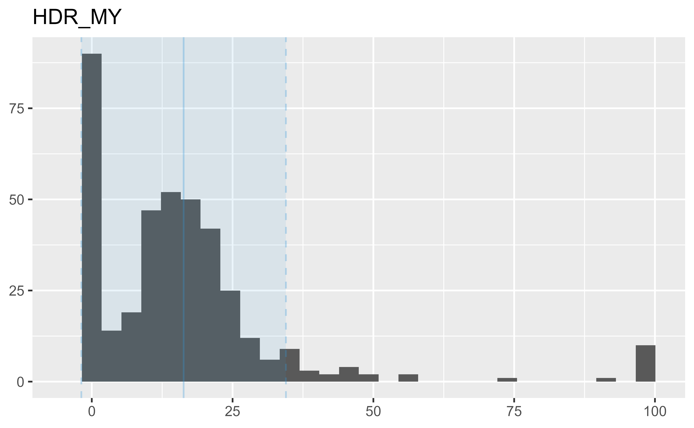
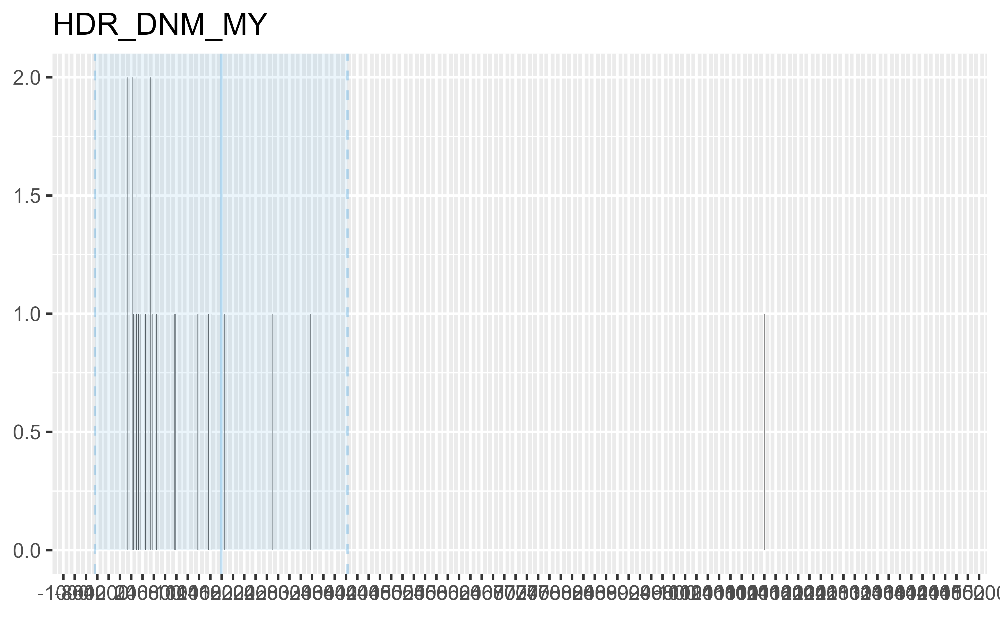
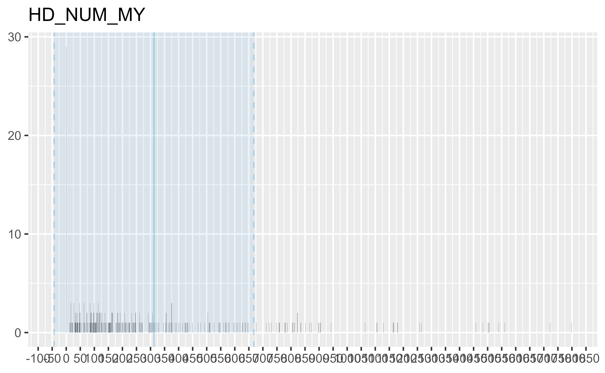
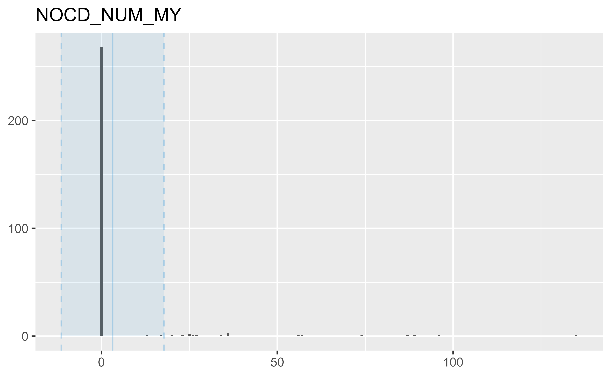
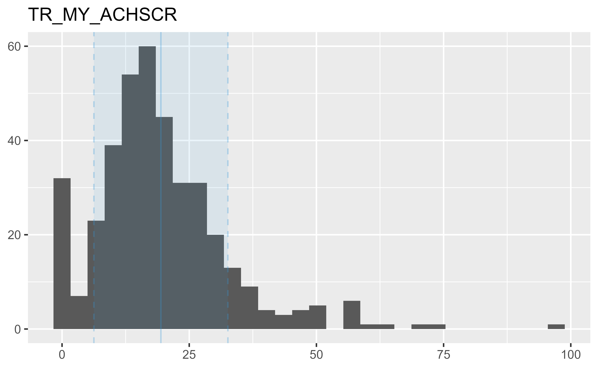
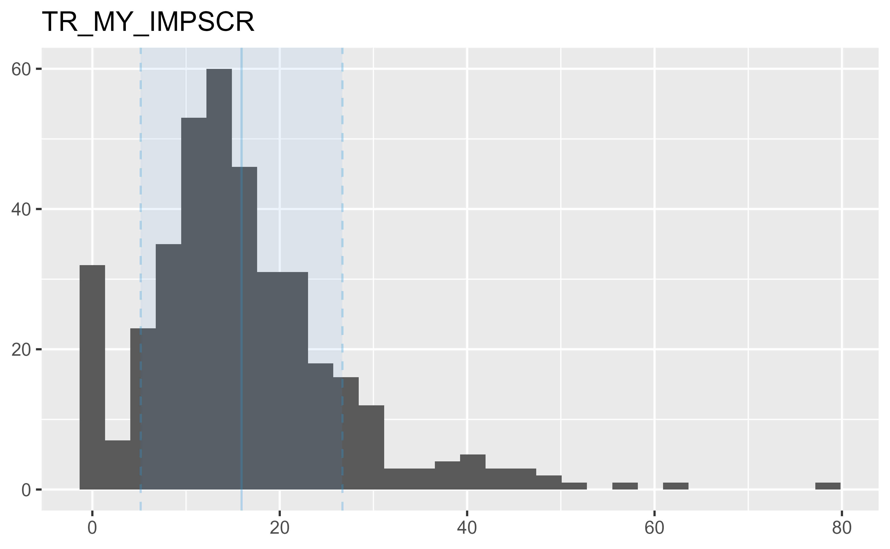
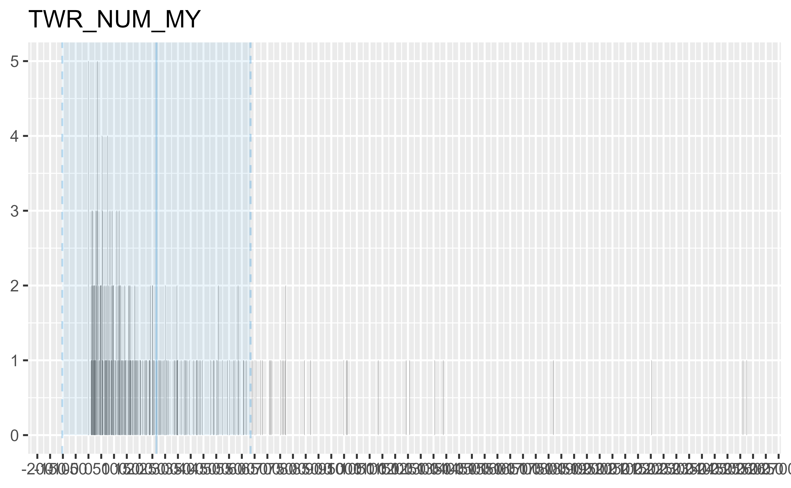
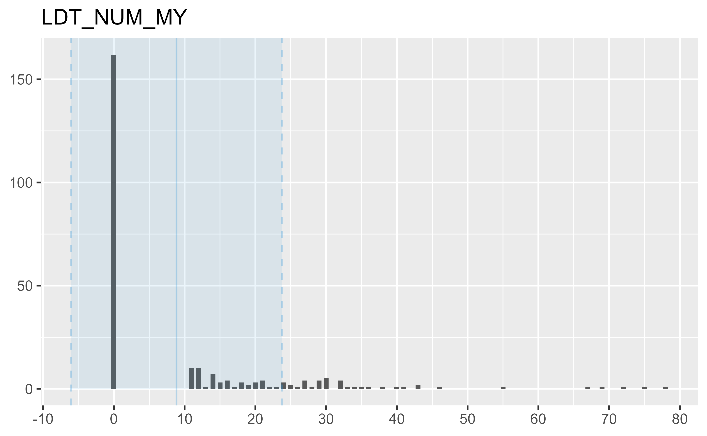
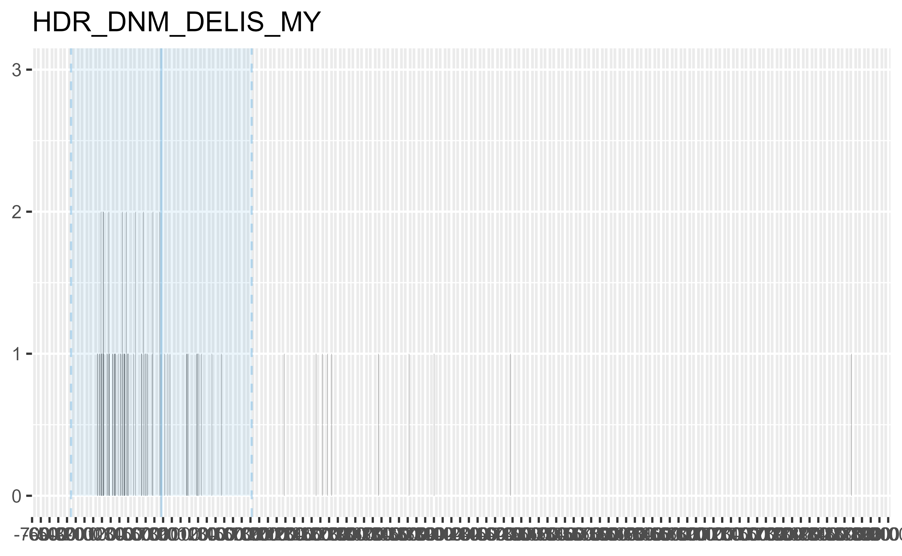
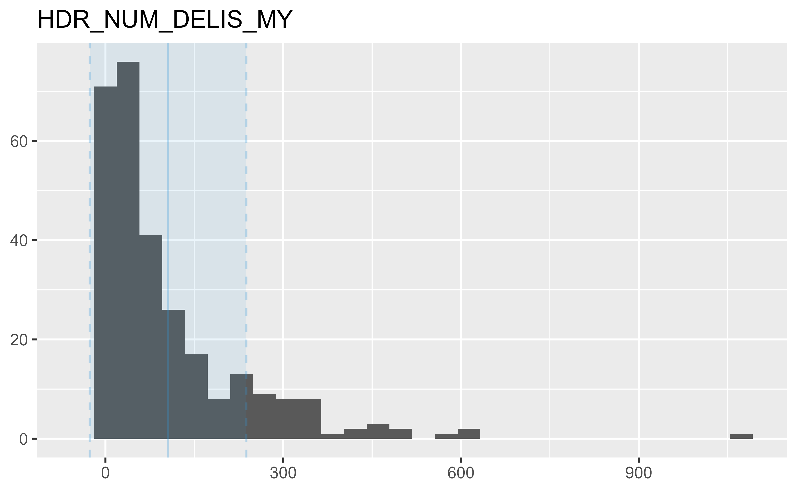
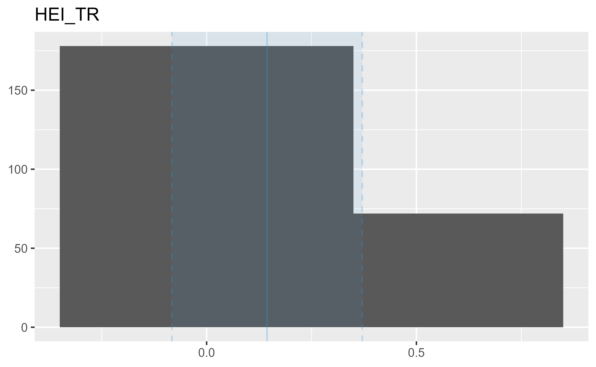
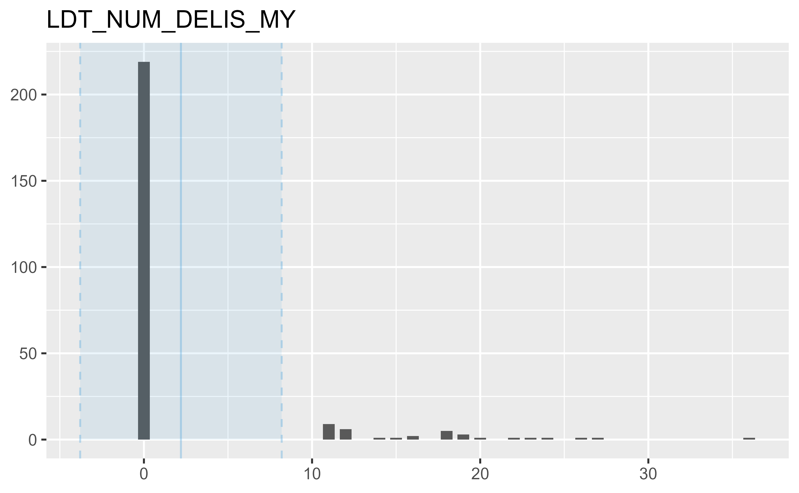
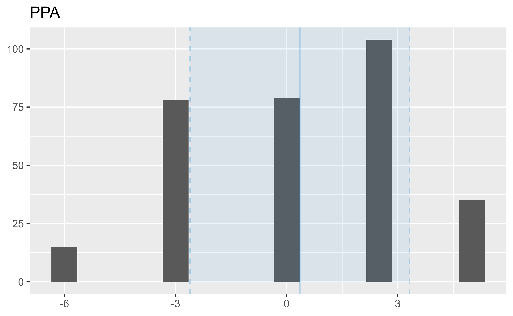